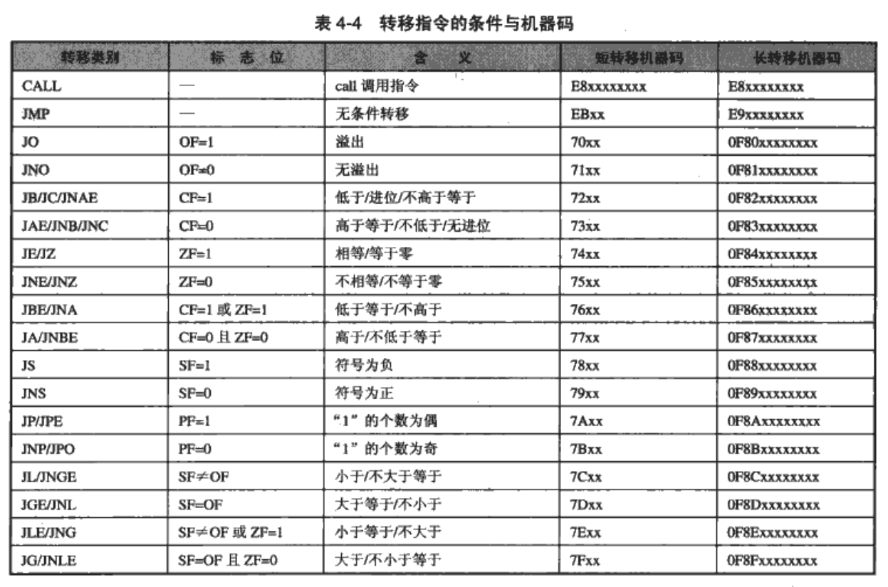

<!DOCTYPE html>
<!--[if IE 8]><html class="no-js lt-ie9" lang="en" > <![endif]-->
<!--[if gt IE 8]><!--> <html class="no-js" lang="en" > <!--<![endif]-->
<head>
  <meta charset="utf-8">
  <meta http-equiv="X-UA-Compatible" content="IE=edge">
  <meta name="viewport" content="width=device-width, initial-scale=1.0">
  
  
  <link rel="shortcut icon" href="../../../img/favicon.ico">
  <title>加密与解密 第四章 逆向分析技术 - 0Xor' CTF WriteUp</title>
  <link href='https://fonts.googleapis.com/css?family=Lato:400,700|Roboto+Slab:400,700|Inconsolata:400,700' rel='stylesheet' type='text/css'>

  <link rel="stylesheet" href="../../../css/theme.css" type="text/css" />
  <link rel="stylesheet" href="../../../css/theme_extra.css" type="text/css" />
  <link rel="stylesheet" href="../../../css/highlight.css">
  
  <script>
    // Current page data
    var mkdocs_page_name = "\u52a0\u5bc6\u4e0e\u89e3\u5bc6 \u7b2c\u56db\u7ae0 \u9006\u5411\u5206\u6790\u6280\u672f";
    var mkdocs_page_input_path = "reversing\\encrypt&decrypt\\\u52a0\u5bc6\u4e0e\u89e3\u5bc6 \u7b2c\u56db\u7ae0-\u9006\u5411\u5206\u6790\u6280\u672f.md";
    var mkdocs_page_url = "/reversing/encrypt&decrypt/\u52a0\u5bc6\u4e0e\u89e3\u5bc6 \u7b2c\u56db\u7ae0-\u9006\u5411\u5206\u6790\u6280\u672f/";
  </script>
  
  <script src="../../../js/jquery-2.1.1.min.js"></script>
  <script src="../../../js/modernizr-2.8.3.min.js"></script>
  <script type="text/javascript" src="../../../js/highlight.pack.js"></script> 
  
</head>

<body class="wy-body-for-nav" role="document">

  <div class="wy-grid-for-nav">

    
    <nav data-toggle="wy-nav-shift" class="wy-nav-side stickynav">
      <div class="wy-side-nav-search">
        <a href="../../.." class="icon icon-home"> 0Xor' CTF WriteUp</a>
        <div role="search">
  <form id ="rtd-search-form" class="wy-form" action="../../../search.html" method="get">
    <input type="text" name="q" placeholder="Search docs" />
  </form>
</div>
      </div>

      <div class="wy-menu wy-menu-vertical" data-spy="affix" role="navigation" aria-label="main navigation">
	<ul class="current">
	  
          
            <li class="toctree-l1">
		
    <a class="" href="../../..">Welcome to 0Xor' WriteUp</a>
	    </li>
          
            <li class="toctree-l1">
		
    <span class="caption-text">Reversing</span>
    <ul class="subnav">
                <li class="">
                    
    <a class="" href="../../Moblie/">Moblie</a>
                </li>
                <li class="">
                    
    <a class="" href="../../reversing%20misc/">reversing misc</a>
                </li>
                <li class=" current">
                    
    <span class="caption-text">Encrypt&decrypt</span>
    <ul class="subnav">
                <li class="toctree-l3">
                    
    <a class="" href="../%E5%8A%A0%E5%AF%86%E4%B8%8E%E8%A7%A3%E5%AF%86%20%E7%AC%AC%E4%B8%80%E7%AB%A0-%E5%9F%BA%E7%A1%80%E7%9F%A5%E8%AF%86/">加密与解密 第一章 基础知识</a>
                </li>
                <li class="toctree-l3">
                    
    <a class="" href="../%E5%8A%A0%E5%AF%86%E4%B8%8E%E8%A7%A3%E5%AF%86%20%E7%AC%AC%E4%B8%89%E7%AB%A0-%E9%9D%99%E6%80%81%E8%B0%83%E8%AF%95%E6%8A%80%E6%9C%AF/">加密与解密 第三章 静态调试技术</a>
                </li>
                <li class="toctree-l3">
                    
    <a class="" href="../%E5%8A%A0%E5%AF%86%E4%B8%8E%E8%A7%A3%E5%AF%86%20%E7%AC%AC%E4%BA%8C%E7%AB%A0-%E5%8A%A8%E6%80%81%E8%B0%83%E8%AF%95%E6%8A%80%E6%9C%AF/">加密与解密 第二章 动态调试技术</a>
                </li>
                <li class="toctree-l3">
                    
    <a class="" href="../%E5%8A%A0%E5%AF%86%E4%B8%8E%E8%A7%A3%E5%AF%86%20%E7%AC%AC%E5%8D%81%E7%AB%A0-PE%E6%96%87%E4%BB%B6%E6%A0%BC%E5%BC%8F/">加密与解密 第十章 PE文件格式</a>
                </li>
                <li class="toctree-l3 current">
                    
    <a class="current" href="./">加密与解密 第四章 逆向分析技术</a>
    <ul class="subnav">
            
    <li class="toctree-l4"><a href="#4">第4章 逆向分析技术</a></li>
    
        <ul>
        
            <li><a class="toctree-l5" href="#41">4.1 启动函数</a></li>
        
            <li><a class="toctree-l5" href="#42">4.2 函数</a></li>
        
            <li><a class="toctree-l5" href="#421">4.2.1 函数的识别</a></li>
        
            <li><a class="toctree-l5" href="#422">4.2.2 函数的参数</a></li>
        
            <li><a class="toctree-l5" href="#43">4.3 数据结构</a></li>
        
            <li><a class="toctree-l5" href="#44">4.4  虚函数</a></li>
        
            <li><a class="toctree-l5" href="#45">4.5  控制语句</a></li>
        
        </ul>
    

    <li class="toctree-l4"><a href="#49-99">4.9  指令修改技巧 99</a></li>
    

    </ul>
                </li>
                <li class="toctree-l3">
                    
    <a class="" href="../%E7%9B%AE%E5%BD%95/">目录</a>
                </li>
    </ul>
                </li>
    </ul>
	    </li>
          
            <li class="toctree-l1">
		
    <span class="caption-text">Wargame</span>
    <ul class="subnav">
                <li class="">
                    
    <span class="caption-text">Crypto</span>
    <ul class="subnav">
                <li class="toctree-l3">
                    
    <a class="" href="../../../wargame/crypto/%5Bctf.nuptzj.cn%5D_PHP_decode/">[ctf.nuptzj.cn] PHP decode</a>
                </li>
                <li class="toctree-l3">
                    
    <a class="" href="../../../wargame/crypto/%5Bctf.nuptzj.cn%5D_base64_N_times/">[ctf.nuptzj.cn] base64 N times</a>
                </li>
                <li class="toctree-l3">
                    
    <a class="" href="../../../wargame/crypto/%5Bctf.nuptzj.cn%5D_base64_all/">[ctf.nuptzj.cn] base64 all</a>
                </li>
                <li class="toctree-l3">
                    
    <a class="" href="../../../wargame/crypto/%5Bctf.nuptzj.cn%5D_easy/">[ctf.nuptzj.cn] easy</a>
                </li>
                <li class="toctree-l3">
                    
    <a class="" href="../../../wargame/crypto/%5Bctf.nuptzj.cn%5D_keyboard/">[ctf.nuptzj.cn] keyboard</a>
                </li>
                <li class="toctree-l3">
                    
    <a class="" href="../../../wargame/crypto/%5Bctf.nuptzj.cn%5D_md5/">[ctf.nuptzj.cn] md5</a>
                </li>
                <li class="toctree-l3">
                    
    <a class="" href="../../../wargame/crypto/%5Bctf.nuptzj.cn%5D_mixed_base64/">[ctf.nuptzj.cn] mixed base64</a>
                </li>
                <li class="toctree-l3">
                    
    <a class="" href="../../../wargame/crypto/%5Bctf.nuptzj.cn%5D_vigenere/">[ctf.nuptzj.cn] vigenere</a>
                </li>
                <li class="toctree-l3">
                    
    <a class="" href="../../../wargame/crypto/%5Bctf.nuptzj.cn%5D_xor/">[ctf.nuptzj.cn] xor</a>
                </li>
                <li class="toctree-l3">
                    
    <a class="" href="../../../wargame/crypto/crypto_summary/">Crypto summary</a>
                </li>
    </ul>
                </li>
                <li class="">
                    
    <span class="caption-text">Misc</span>
    <ul class="subnav">
                <li class="toctree-l3">
                    
    <a class="" href="../../../wargame/misc/%5Bctf.nuptzj.cn%5D_gif/">[ctf.nuptzj.cn] gif</a>
                </li>
                <li class="toctree-l3">
                    
    <a class="" href="../../../wargame/misc/%5Bctf.nuptzj.cn%5D_qiubilong/">[ctf.nuptzj.cn] qiubilong</a>
                </li>
                <li class="toctree-l3">
                    
    <a class="" href="../../../wargame/misc/%5Bctf.nuptzj.cn%5D_tuzhong/">[ctf.nuptzj.cn] tuzhong</a>
                </li>
    </ul>
                </li>
                <li class="">
                    
    <span class="caption-text">Reversing</span>
    <ul class="subnav">
                <li class="toctree-l3">
                    
    <a class="" href="../../../wargame/reversing/%5Bbugku.com%5D_ali/">[bugku.com] ali</a>
                </li>
                <li class="toctree-l3">
                    
    <a class="" href="../../../wargame/reversing/%5Bctf.nuptzj.cn%5D_ReadAsm2/">[ctf.nuptzj.cn] ReadAsm2</a>
                </li>
                <li class="toctree-l3">
                    
    <a class="" href="../../../wargame/reversing/%5Bctf.nuptzj.cn%5D_maze/">[ctf.nuptzj.cn] maze</a>
                </li>
                <li class="toctree-l3">
                    
    <a class="" href="../../../wargame/reversing/%5Bctf.nuptzj.cn%5D_py/">[ctf.nuptzj.cn] py</a>
                </li>
                <li class="toctree-l3">
                    
    <a class="" href="../../../wargame/reversing/%5Bctf.nuptzj.cn%5D_wxyvm/">[ctf.nuptzj.cn] wxyvm</a>
                </li>
                <li class="toctree-l3">
                    
    <a class="" href="../../../wargame/reversing/%5Bctf.nuptzj.cn%5D_wxyvm2/">[ctf.nuptzj.cn] wxyvm2</a>
                </li>
                <li class="toctree-l3">
                    
    <a class="" href="../../../wargame/reversing/%5Bwhaleedu.com%5D_dice/">[whaleedu.com] dice</a>
                </li>
                <li class="toctree-l3">
                    
    <a class="" href="../../../wargame/reversing/%5Bwhaleedu.com%5D_pyc1/">[whaleedu.com] pyc1</a>
                </li>
    </ul>
                </li>
                <li class="">
                    
    <span class="caption-text">Web</span>
    <ul class="subnav">
                <li class="toctree-l3">
                    
    <a class="" href="../../../wargame/web/%5Bbugku.com%5D_upload_test/">[bugku.com] upload test</a>
                </li>
                <li class="toctree-l3">
                    
    <a class="" href="../../../wargame/web/%5Bbugku.com%5D_web2/">[bugku.com] web2</a>
                </li>
                <li class="toctree-l3">
                    
    <a class="" href="../../../wargame/web/%5Bctf.nuptzj.cn%5D_20_years/">[ctf.nuptzj.cn] 20 years</a>
                </li>
                <li class="toctree-l3">
                    
    <a class="" href="../../../wargame/web/%5Bctf.nuptzj.cn%5D_aaencode/">[ctf.nuptzj.cn] aaencode</a>
                </li>
                <li class="toctree-l3">
                    
    <a class="" href="../../../wargame/web/%5Bctf.nuptzj.cn%5D_bypass_again/">[ctf.nuptzj.cn] bypass again</a>
                </li>
                <li class="toctree-l3">
                    
    <a class="" href="../../../wargame/web/%5Bctf.nuptzj.cn%5D_cookie/">[ctf.nuptzj.cn] cookie</a>
                </li>
                <li class="toctree-l3">
                    
    <a class="" href="../../../wargame/web/%5Bctf.nuptzj.cn%5D_md5_collision/">[ctf.nuptzj.cn] md5 collision</a>
                </li>
                <li class="toctree-l3">
                    
    <a class="" href="../../../wargame/web/%5Bctf.nuptzj.cn%5D_multi-byte_character/">[ctf.nuptzj.cn] multi byte character</a>
                </li>
                <li class="toctree-l3">
                    
    <a class="" href="../../../wargame/web/%5Bctf.nuptzj.cn%5D_mysql/">[ctf.nuptzj.cn] mysql</a>
                </li>
                <li class="toctree-l3">
                    
    <a class="" href="../../../wargame/web/%5Bctf.nuptzj.cn%5D_pass%20check/">[ctf.nuptzj.cn] pass check</a>
                </li>
                <li class="toctree-l3">
                    
    <a class="" href="../../../wargame/web/%5Bctf.nuptzj.cn%5D_php_0x/">[ctf.nuptzj.cn] php 0x</a>
                </li>
                <li class="toctree-l3">
                    
    <a class="" href="../../../wargame/web/%5Bctf.nuptzj.cn%5D_php_LFI/">[ctf.nuptzj.cn] php LFI</a>
                </li>
                <li class="toctree-l3">
                    
    <a class="" href="../../../wargame/web/%5Bctf.nuptzj.cn%5D_php_decode/">[ctf.nuptzj.cn] php decode</a>
                </li>
                <li class="toctree-l3">
                    
    <a class="" href="../../../wargame/web/%5Bctf.nuptzj.cn%5D_qiandao/">[ctf.nuptzj.cn] qiandao</a>
                </li>
                <li class="toctree-l3">
                    
    <a class="" href="../../../wargame/web/%5Bctf.nuptzj.cn%5D_qiandao2/">[ctf.nuptzj.cn] qiandao2</a>
                </li>
                <li class="toctree-l3">
                    
    <a class="" href="../../../wargame/web/%5Bctf.nuptzj.cn%5D_sql_injection_1/">[ctf.nuptzj.cn] sql injection 1</a>
                </li>
                <li class="toctree-l3">
                    
    <a class="" href="../../../wargame/web/%5Bctf.nuptzj.cn%5D_sql_injection_2/">[ctf.nuptzj.cn] sql injection 2</a>
                </li>
                <li class="toctree-l3">
                    
    <a class="" href="../../../wargame/web/%5Bctf.nuptzj.cn%5D_sql_injection_4/">[ctf.nuptzj.cn] sql injection 4</a>
                </li>
                <li class="toctree-l3">
                    
    <a class="" href="../../../wargame/web/%5Bctf.nuptzj.cn%5D_upload_file/">[ctf.nuptzj.cn] upload file</a>
                </li>
                <li class="toctree-l3">
                    
    <a class="" href="../../../wargame/web/%5Bctf.nuptzj.cn%5D_url_redirect/">[ctf.nuptzj.cn] url redirect</a>
                </li>
                <li class="toctree-l3">
                    
    <a class="" href="../../../wargame/web/%5Bctf.nuptzj.cn%5D_var_override/">[ctf.nuptzj.cn] var override</a>
                </li>
                <li class="toctree-l3">
                    
    <a class="" href="../../../wargame/web/%5Bctf.nuptzj.cn%5D_web3/">[ctf.nuptzj.cn] web3</a>
                </li>
                <li class="toctree-l3">
                    
    <a class="" href="../../../wargame/web/%5Bctf.nuptzj.cn%5D_where_are_you_come_from/">[ctf.nuptzj.cn] where are you come from</a>
                </li>
                <li class="toctree-l3">
                    
    <a class="" href="../../../wargame/web/%5Bctf.nuptzj.cn%5D_x00/">[ctf.nuptzj.cn] x00</a>
                </li>
                <li class="toctree-l3">
                    
    <a class="" href="../../../wargame/web/%5Bctf.nuptzj.cn%5D_zonghe/">[ctf.nuptzj.cn] zonghe</a>
                </li>
                <li class="toctree-l3">
                    
    <a class="" href="../../../wargame/web/%5Bctf.nuptzj.cn%5D_zonghe2/">[ctf.nuptzj.cn] zonghe2</a>
                </li>
                <li class="toctree-l3">
                    
    <a class="" href="../../../wargame/web/%5Bshiyanbar.com%5D_add_something/">[shiyanbar.com] add something</a>
                </li>
                <li class="toctree-l3">
                    
    <a class="" href="../../../wargame/web/%5Bshiyanbar.com%5D_be_serious/">[shiyanbar.com] be serious</a>
                </li>
                <li class="toctree-l3">
                    
    <a class="" href="../../../wargame/web/%5Bshiyanbar.com%5D_forms/">[shiyanbar.com] forms</a>
                </li>
                <li class="toctree-l3">
                    
    <a class="" href="../../../wargame/web/%5Bshiyanbar.com%5D_guaiwanmojiao/">[shiyanbar.com] guaiwanmojiao</a>
                </li>
                <li class="toctree-l3">
                    
    <a class="" href="../../../wargame/web/%5Bshiyanbar.com%5D_houtaidenglu/">[shiyanbar.com] houtaidenglu</a>
                </li>
                <li class="toctree-l3">
                    
    <a class="" href="../../../wargame/web/%5Bshiyanbar.com%5D_post_fast/">[shiyanbar.com] post fast</a>
                </li>
                <li class="toctree-l3">
                    
    <a class="" href="../../../wargame/web/%5Bshiyanbar.com%5D_simple_sql_injection/">[shiyanbar.com] simple sql injection</a>
                </li>
                <li class="toctree-l3">
                    
    <a class="" href="../../../wargame/web/%5Bshiyanbar.com%5D_simple_sql_injection_2/">[shiyanbar.com] simple sql injection 2</a>
                </li>
                <li class="toctree-l3">
                    
    <a class="" href="../../../wargame/web/%5Bshiyanbar.com%5D_simple_sql_injection_3/">[shiyanbar.com] simple sql injection 3</a>
                </li>
                <li class="toctree-l3">
                    
    <a class="" href="../../../wargame/web/web_summary/">Web summary</a>
                </li>
    </ul>
                </li>
    </ul>
	    </li>
          
            <li class="toctree-l1">
		
    <span class="caption-text">Web</span>
    <ul class="subnav">
                <li class="">
                    
    <a class="" href="../../../web/sqlmap_learning/">Sqlmap learning</a>
                </li>
    </ul>
	    </li>
          
        </ul>
      </div>
      &nbsp;
    </nav>

    <section data-toggle="wy-nav-shift" class="wy-nav-content-wrap">

      
      <nav class="wy-nav-top" role="navigation" aria-label="top navigation">
        <i data-toggle="wy-nav-top" class="fa fa-bars"></i>
        <a href="../../..">0Xor' CTF WriteUp</a>
      </nav>

      
      <div class="wy-nav-content">
        <div class="rst-content">
          <div role="navigation" aria-label="breadcrumbs navigation">
  <ul class="wy-breadcrumbs">
    <li><a href="../../..">Docs</a> &raquo;</li>
    
      
        
          <li>Reversing &raquo;</li>
        
      
        
          <li>Encrypt&decrypt &raquo;</li>
        
      
    
    <li>加密与解密 第四章 逆向分析技术</li>
    <li class="wy-breadcrumbs-aside">
      
    </li>
  </ul>
  <hr/>
</div>
          <div role="main">
            <div class="section">
              
                <p>加密与解密 第2篇 调试篇</p>
<h2 id="4">第4章 逆向分析技术</h2>
<h3 id="41">4.1 启动函数</h3>
<ul>
<li>c/c++运行时启动函数作用</li>
<li>检索指向新进程的命令行指针</li>
<li>检索指向新进程的环境变量指针</li>
<li>全局变量初始化</li>
<li>内存堆栈初始化</li>
</ul>
<pre><code class="asm">00401020 &gt;/$  55            push    ebp
00401021  |.  8BEC          mov     ebp, esp
00401023  |.  6A FF         push    -1
00401025  |.  68 A0504000   push    004050A0
0040102A  |.  68 7C1C4000   push    00401C7C                         ;  SE 处理程序安装
0040102F  |.  64:A1 0000000&gt;mov     eax, dword ptr fs:[0]
00401035  |.  50            push    eax
00401036  |.  64:8925 00000&gt;mov     dword ptr fs:[0], esp
0040103D  |.  83EC 10       sub     esp, 10
00401040  |.  53            push    ebx
00401041  |.  56            push    esi
</code></pre>

<h3 id="42">4.2 函数</h3>
<h3 id="421">4.2.1 函数的识别</h3>
<ul>
<li>CALL</li>
<li>RET</li>
</ul>
<h3 id="422">4.2.2 函数的参数</h3>
<h4 id="_1">利用堆栈传递</h4>
<pre><code class="asm">00401000 &gt;/$  6A 04         push    4                                ; /Arg2 = 00000004
00401002  |.  6A 03         push    3                                ; |Arg1 = 00000003
00401004  |.  E8 16000000   call    0040101F                         ; \Add.0040101F
00401009  |.  8BD8          mov     ebx, eax
0040100B  |.  6A 00         push    0                                ; /ExitCode = 0
0040100D  \.  FF15 00204000 call    [&lt;&amp;KERNEL32.ExitProcess&gt;]        ; \ExitProcess


0040101F  /$  55            push    ebp                              ;  保护现场原先的EBP指针
00401020  |.  8BEC          mov     ebp, esp                         ;  设置新的EBP指针，指向栈顶
00401022  |.  83EC 04       sub     esp, 4                           ;  分配局部变量所有空间
00401025  |.  8B45 0C       mov     eax, [ebp+C]                     ;  调用参数2
00401028  |.  8B5D 08       mov     ebx, [ebp+8]                     ;  调用参数1
0040102B  |.  895D FC       mov     [ebp-4] , ebx                    ;  参数1放局部变量里
0040102E  |.  0345 FC       add     eax,[ebp-4]                      ;  参数2与局部变量相加
00401031  |.  83C4 04       add     esp, 4                           ;  释放局部变量所有空间
00401034  |.  5D            pop     ebp                              ;  恢复现场的ebp指针
00401035  \.  C2 0800       retn    8
</code></pre>

<ul>
<li>enter/leave</li>
</ul>
<p><code>enter = push ebp/move ebp,esp/sub esp,xxx</code>
   <code>leave = add esp,xxx/pop esp</code></p>
<p><code>asm
  enter xxx,0   ;0表示创建xxx放局部变量
  ...
  leave 
  ret 8</code></p>
<ul>
<li>vc6.0 使用<code>maximize speed</code></li>
</ul>
<p><code>asm
  push par2 ;参数2
  push par1 ;参数1
  call test2
  {
    move eax, dword ptr [esp+04] ;调用参数1
      move ecx, dword ptr [esp+08] ;调用参数2
      ...
      ret 8
  }</code></p>
<h5 id="_2">利用寄存器传递变量</h5>
<ul>
<li>规范：__fastcall</li>
</ul>
<p>```c
  /<strong><em>*</em></strong><strong><em>*</em></strong><strong><em>*</em></strong><strong><em>*</em></strong><strong><em>*</em></strong><strong><em>*</em></strong><strong><em>*</em></strong><strong><em>*</em><em>
  *  fastcall调用                                                                                                   </em>
  *   (c)  看雪软件安全网站 www.pediy.com 2000-2008                         *
  </strong><strong><em>*</em></strong><strong><em>*</em></strong><strong><em>*</em></strong><strong><em>*</em></strong><strong><em>*</em></strong><strong><em>*</em></strong><strong><em>*</em></strong><strong>*</strong>/</p>
<p>int  __fastcall Add(char,long,int,int);</p>
<p>main(void)
   {
        Add(1,2,3,4);
        return 0;
   }</p>
<p>int __fastcall Add(char a, long b, int c, int d)</p>
<p>{
       return (a + b + c + d);
  }</p>
<p>```</p>
<p>vc编译： <code>optimizations:default</code></p>
<h5 id="_3">名称修饰约定</h5>
<ul>
<li>name mangling/name decoration</li>
<li>同一名字具有不同的参数或者不同的作用域</li>
<li>c编译时函数名修饰约定规则：</li>
<li>__stdcall调用约定：_{functionname}@{byte_number}</li>
<li>_cdel调用约定：_{functionname}</li>
<li>__fastcall调用约定：@{functionname}@{byte_number}</li>
</ul>
<h4 id="423">4.2.3 函数的返回值</h4>
<h5 id="0x1-return">0x1 用return返回</h5>
<h5 id="0x2">0x2 通过参数按引用方式返回</h5>
<h3 id="43">4.3 数据结构</h3>
<h4 id="431">4.3.1 局部变量</h4>
<ol>
<li>
<p>利用堆栈</p>
</li>
<li>
<p><code>sub esp,8</code></p>
</li>
<li>
<p>调用格式：</p>
<ul>
<li>局部：[ebp-xxxx]</li>
<li>参数调用：[ebp+xxxx]</li>
</ul>
</li>
<li>
<p>局部变量与清除堆栈的几种形式</p>
<table>
<thead>
<tr>
<th>形式一</th>
<th>形式二</th>
<th>形式三</th>
</tr>
</thead>
<tbody>
<tr>
<td>sub esp,n<br /><br />add esp,n</td>
<td>add esp,-n<br />sub esp,-n</td>
<td>push reg<br />pop reg</td>
</tr>
</tbody>
</table>
</li>
<li>
<p>局部变量初始化</p>
<ul>
<li>mov [ebp-04],5</li>
<li>push 5</li>
</ul>
</li>
<li>
<p>利用寄存器</p>
</li>
</ol>
<p>除了堆栈占用2个寄存器外，编译器会利用剩下的6个通用寄存器</p>
<h4 id="432">4.3.2 全局变量</h4>
<ul>
<li>
<p>位于.data段中</p>
</li>
<li>
<p>格式：</p>
</li>
</ul>
<p><code>asm
  move eax,dword ptr [4084c0h]</code></p>
<ul>
<li>
<p>作用：</p>
</li>
<li>
<p>传递参数</p>
</li>
<li>
<p>传递函数返回值</p>
</li>
<li>
<p>示例</p>
</li>
</ul>
<p>```c
  /<strong><em>*</em></strong><strong><em>*</em></strong><strong><em>*</em></strong><strong><em>*</em></strong><strong><em>*</em></strong><strong><em>*</em></strong><strong><em>*</em></strong><strong><em>*</em>*
  《加密与解密》第三版配套实例
                                        4.3.2  全局变量
  (c)  看雪软件安全网站 www.pediy.com 2000-2008
  </strong><strong><em>*</em></strong><strong><em>*</em></strong><strong><em>*</em></strong><strong><em>*</em></strong><strong><em>*</em></strong><strong><em>*</em></strong><strong><em>*</em></strong><strong>*</strong>/
  int z;</p>
<p>int add(int x,int y);
  int main(void)
   {
     int a=5,b=6;
     z=7;
     add(a,b);
     return 0;
   }</p>
<p>int add(int x,int y)
   {
     return(x+y+z);
   }
  ```</p>
<p>vc++6.0编译，选择不优化</p>
<ul>
<li>与静态变量类似，但静态变量只在定义这些变量的函数内有效</li>
</ul>
<h4 id="433">4.3.3  数组</h4>
<ul>
<li>
<p>实现方式：基址+变量</p>
</li>
<li>
<p>示例：</p>
</li>
</ul>
<p>```c
  /<strong><em>*</em></strong><strong><em>*</em></strong><strong><em>*</em></strong><strong><em>*</em></strong><strong><em>*</em></strong><strong><em>*</em></strong><strong><em>*</em></strong><strong><em>*</em>*
  《加密与解密》第三版配套实例
                                        4.3.3 数组
  (c)  看雪软件安全网站 www.pediy.com 2000-2008
  </strong><strong><em>*</em></strong><strong><em>*</em></strong><strong><em>*</em></strong><strong><em>*</em></strong><strong><em>*</em></strong><strong><em>*</em></strong><strong><em>*</em></strong><strong>*</strong>/</p>
<p>#include <stdio.h></p>
<p>int main(void)
  {
    static int a[3]={0x11,0x22,0x33};
      int i,s=0,b[3];
    for(i=0;i&lt;3;i++)
    { 
        s=s+a[i];
        b[i]=s;
    }</p>
<pre><code>for(i=0;i&lt;3;i++)
{
    printf("%d\n",b[i]);
}

return 0;
</code></pre>
<p>}</p>
<p>```</p>
<p>编译优化选项：最快速度，但是我build出现了错误：</p>
<blockquote>
<p>Command line error D2016 : '/O2' and '/GZ' command-line options are incompatible
执行 cl.exe 时出错.</p>
</blockquote>
<ul>
<li>/GZ 可以帮助捕获内存错误 </li>
<li>/O1 或 /O2 优化开关，使程序最小或最快 </li>
</ul>
<p>既然两个选项不兼容，那么就把/GZ去掉，编译成功 :happy:</p>
<ul>
<li>sample</li>
</ul>
<p><code>asm
  mov eax,[407030h+eax]</code></p>
<ul>
<li>
<p>数组存在位置</p>
</li>
<li>
<p>堆栈</p>
</li>
<li>数据段 .data</li>
<li>
<p>动态内存</p>
</li>
<li>
<p>间接寻址一般出现在：</p>
</li>
<li>
<p>数组</p>
</li>
<li>
<p>结构赋值</p>
</li>
<li>
<p>[基址+寄存器]</p>
</li>
<li>
<p>基址可以为常量或者是寄存器</p>
</li>
</ul>
<h3 id="44">4.4  虚函数</h3>
<ul>
<li>
<p>虚函数的地址：在调用之前加以确定</p>
</li>
<li>
<p>虚函数表（Virtual Table，VTBL）：存放虚函数的引用</p>
</li>
<li>
<p>虚函数表指针（Virtual Table Pointer,VPTR）:指向对象中的函数</p>
</li>
<li>
<p>示例：</p>
</li>
</ul>
<p>```c
  /<strong><em>*</em></strong><strong><em>*</em></strong><strong><em>*</em></strong><strong><em>*</em></strong><strong><em>*</em></strong><strong><em>*</em></strong><strong><em>*</em></strong><strong><em>*</em>*
  《加密与解密》第三版配套实例
                                      4.4 虚函数
  (c)  看雪软件安全网站 www.pediy.com 2000-2008
  </strong><strong><em>*</em></strong><strong><em>*</em></strong><strong><em>*</em></strong><strong><em>*</em></strong><strong><em>*</em></strong><strong><em>*</em></strong><strong><em>*</em></strong><strong>*</strong>/</p>
<p>#include <stdio.h>
  class CSum
  {
  public:
    virtual int Add(int a, int b) 
    {
        return (a + b);
    }</p>
<pre><code>virtual int Sub(int a, int b )
{
    return (a - b);
}
</code></pre>
<p>};</p>
<p>void main()
  { <br />
    CSum*   pCSum = new CSum ;  </p>
<pre><code>pCSum-&gt;Add(1,2);
pCSum-&gt;Sub(1,2);
</code></pre>
<p>} </p>
<p>```</p>
<p>汇编代码：</p>
<p><code>asm
  00401030 &gt; &gt; \56            push esi
  00401031   .  6A 04         push 0x4
  00401033   .  E8 88000000   call Calling_.operator new
  00401038   .  83C4 04       add esp,0x4
  0040103B   .  85C0          test eax,eax
  0040103D   .  74 0A         je XCalling_.00401049
  0040103F   .  C700 1C204100 mov dword ptr ds:[eax],offset Calling_.C&gt;
  00401045   .  8BF0          mov esi,eax
  00401047   .  EB 02         jmp XCalling_.0040104B
  00401049   &gt;  33F6          xor esi,esi
  0040104B   &gt;  8B06          mov eax,dword ptr ds:[esi]
  0040104D   .  6A 02         push 0x2
  0040104F   .  6A 01         push 0x1
  00401051   .  8BCE          mov ecx,esi
  00401053   .  FF10          call dword ptr ds:[eax]
  00401055   .  8B16          mov edx,dword ptr ds:[esi]
  00401057   .  6A 02         push 0x2
  00401059   .  6A 01         push 0x1
  0040105B   .  8BCE          mov ecx,esi
  0040105D   .  FF52 04       call dword ptr ds:[edx+0x4]
  00401060   .  5E            pop esi
  00401061   .  C3            retn</code></p>
<p><code>mov ecx,esi</code>中，ecx保存了 ==this指针==，但是从汇编代码上看，没看出this指针的作用</p>
<p>vtbl中的数据：</p>
<p><code>0041201C &gt;05 10 40 00 0F 10 40 00  @.@.</code></p>
<p>add函数：</p>
<p><code>asm
  00401080 &gt; &gt; \8B4424 08     mov eax,dword ptr ss:[esp+0x8]
  00401084   .  8B4C24 04     mov ecx,dword ptr ss:[esp+0x4]
  00401088   .  03C1          add eax,ecx
  0040108A   .  C2 0800       retn 0x8</code></p>
<p>sub函数：</p>
<p><code>asm
  004010A0 &gt; &gt; \8B4424 04     mov eax,dword ptr ss:[esp+0x4]
  004010A4   .  8B4C24 08     mov ecx,dword ptr ss:[esp+0x8]
  004010A8   .  2BC1          sub eax,ecx
  004010AA   .  C2 0800       retn 0x8</code></p>
<h3 id="45">4.5  控制语句</h3>
<h4 id="451-if-then-else">4.5.1  IF-THEN-ELSE语句</h4>
<ul>
<li>
<p>汇编代码</p>
</li>
<li>
<p>整数</p>
<ul>
<li>cmp </li>
</ul>
<p><code>a-b</code>的结果，影响ZF/进位/符号位/溢出标志</p>
<p><code>asm
  cmp a,b
  jz（jnz） xxxx</code></p>
<ul>
<li>test</li>
</ul>
<p><code>a &amp;&amp;b</code> a和b逻辑与的结果，结果为0，ZF置1</p>
<ul>
<li>or</li>
</ul>
</li>
</ul>
<pre><code class="asm">00401010   push        ecx
11:        int a,b=5;
12:   scanf(&quot;%d&quot;,&amp;a);
00401011   lea         eax,[esp]
00401015   push        eax
00401016   push        offset string &quot;%d&quot; (00416a30)
0040101B   call        scanf (00401050)
13:        if(a==0)
00401020   mov         eax,dword ptr [esp+8]
00401024   add         esp,8
00401027   test        eax,eax
00401029   jne         main+20h (00401030)
14:            a=8;
0040102B   mov         eax,8
15:
16:
17:        return a+b;
00401030   add         eax,5
18:    }
00401033   pop         ecx
00401034   ret

</code></pre>

<h4 id="452-switch-case">4.5.2  SWITCH-CASE语句</h4>
<ul>
<li>没有优化的情况下，编译：</li>
</ul>
<pre><code class="asm">00401010   push        ebp
00401011   mov         ebp,esp
00401013   sub         esp,8
00401016   mov         dword ptr [ebp-8],0CCCCCCCCh
0040101D   mov         dword ptr [ebp-4],0CCCCCCCCh
11:        int a;
12:        scanf(&quot;%d&quot;,&amp;a);
00401024   lea         eax,[a]
00401027   push        eax
00401028   push        offset ___xt_z+104h (00417a30)
0040102D   call        scanf (00401140)
00401032   add         esp,8
13:
14:        switch(a)
15:        {
00401035   mov         ecx,dword ptr [a]
00401038   mov         dword ptr [ebp-8],ecx
0040103B   cmp         dword ptr [ebp-8],1  ;case 1
0040103F   je          main+3Fh (0040104f)  
00401041   cmp         dword ptr [ebp-8],2  ;case 2
00401045   je          main+4Eh (0040105e)
00401047   cmp         dword ptr [ebp-8],0Ah    ;case 10
0040104B   je          main+5Dh (0040106d)
0040104D   jmp         main+6Ch (0040107c)
16:           case 1 :printf(&quot;a=1&quot;);
0040104F   push        offset ___xt_z+108h (00417a34)
00401054   call        printf (004010c0)
00401059   add         esp,4
17:                       break;
0040105C   jmp         main+79h (00401089)
18:           case 2 :printf(&quot;a=2&quot;);
0040105E   push        offset ___xt_z+10Ch (00417a38)
00401063   call        printf (004010c0)
00401068   add         esp,4
19:                       break;
0040106B   jmp         main+79h (00401089)
20:           case 10:printf(&quot;a=10&quot;);
0040106D   push        offset ___xt_z+110h (00417a3c)
00401072   call        printf (004010c0)
00401077   add         esp,4
21:                       break;
0040107A   jmp         main+79h (00401089)
22:           default :printf(&quot;a=default&quot;);
0040107C   push        offset ___xt_z+118h (00417a44)
00401081   call        printf (004010c0)
00401086   add         esp,4
23:                        break;
24:        }
25:
26:        return 0;
00401089   xor         eax,eax
</code></pre>

<ul>
<li>设置了最大速度的情况下，编译：</li>
</ul>
<pre><code class="asm">9:    int main(void)
10:    {
0040F9A0   push        ecx  ;为局部变量分配内存，相当于sub esp,4
11:        int a;
12:        scanf(&quot;%d&quot;,&amp;a);
0040F9A1   lea         eax,[esp]
0040F9A5   push        eax
0040F9A6   push        offset string &quot;%d&quot; (00417d1c)
0040F9AB   call        scanf (00401140)
13:
14:        switch(a)
15:        {
0040F9B0   mov         eax,dword ptr [esp+8]
0040F9B4   add         esp,8
0040F9B7   dec         eax  ;检查eax是否为1，如果是，下一句就跳转
0040F9B8   je          main+55h (0040f9f5)  ;相当于case 1
0040F9BA   dec         eax  ;eax再减1，即原来的eax是2
0040F9BB   je          main+44h (0040f9e4)  ;相当于 case 2
0040F9BD   sub         eax,8                ;原来的值为10
0040F9C0   je          main+33h (0040f9d3)  ;case 10
21:                       break;
22:           default :printf(&quot;a=default&quot;);
0040F9C2   push        offset string &quot;a=default&quot; (0041a358)
0040F9C7   call        printf (004010c0)
0040F9CC   add         esp,4
23:                        break;
24:        }
25:
26:        return 0;
0040F9CF   xor         eax,eax
27:    }
0040F9D1   pop         ecx
0040F9D2   ret
19:                       break;
20:           case 10:printf(&quot;a=10&quot;);
0040F9D3   push        offset string &quot;a=10&quot; (00417e94)
0040F9D8   call        printf (004010c0)
0040F9DD   add         esp,4
23:                        break;
24:        }
25:
26:        return 0;
0040F9E0   xor         eax,eax
27:    }
0040F9E2   pop         ecx
0040F9E3   ret
17:                       break;
18:           case 2 :printf(&quot;a=2&quot;);
0040F9E4   push        offset string &quot;a=2&quot; (00417a64)
0040F9E9   call        printf (004010c0)
0040F9EE   add         esp,4
23:                        break;
24:        }
25:
26:        return 0;
0040F9F1   xor         eax,eax
27:    }
0040F9F3   pop         ecx
0040F9F4   ret
16:           case 1 :printf(&quot;a=1&quot;);
0040F9F5   push        offset string &quot;a=1&quot; (00417a50)
0040F9FA   call        printf (004010c0)
0040F9FF   add         esp,4
23:                        break;
24:        }
25:
26:        return 0;
0040FA02   xor         eax,eax
27:    }
0040FA04   pop         ecx
0040FA05   ret

</code></pre>

<ul>
<li>当case取值表示一个算术级数，编译器会利用一个跳转表来实现</li>
</ul>
<p>注：使用vc6.0调试，产生的调试信息，但是有一处注释有明显的问题，<code>case 1</code>下面是没有defualt语句的，但是vc的注释却显示了<code>default :printf("a=default");</code>，这里需要注意</p>
<pre><code class="asm">   int main(void)
11:    {
00401010 51                   push        ecx
12:        int a;
13:        scanf(&quot;%d&quot;,&amp;a);
00401011 8D 44 24 00          lea         eax,[esp]
00401015 50                   push        eax
00401016 68 58 7A 41 00       push        offset string &quot;%d&quot; (00417a58)
0040101B E8 80 01 00 00       call        scanf (004011a0)
14:
15:        switch(a)
16:        {
00401020 8B 4C 24 08          mov         ecx,dword ptr [esp+8]
00401024 83 C4 08             add         esp,8
00401027 8D 41 FF             lea         eax,[ecx-1]
0040102A 83 F8 06             cmp         eax,6 ;判断是否为default节点
0040102D 77 7E                ja          $L545+11h (004010ad)
0040102F FF 24 85 C0 10 40 00 jmp         dword ptr [eax*4+4010C0h] ;跳转表
17:           case 1 :printf(&quot;a=1&quot;);
00401036 68 54 7A 41 00       push        offset string &quot;a=1&quot; (00417a54)
30:                       break;
31:
32:           default :printf(&quot;a=default&quot;);
0040103B E8 E0 00 00 00       call        printf (00401120)
00401040 83 C4 04             add         esp,4
33:                        break;
34:        }
35:
36:        return 0;
00401043 33 C0                xor         eax,eax
37:    }
00401045 59                   pop         ecx
00401046 C3                   ret
18:                       break;
19:           case 2 :printf(&quot;a=2&quot;);
00401047 68 50 7A 41 00       push        offset string &quot;a=2&quot; (00417a50)
30:                       break;
31:
32:           default :printf(&quot;a=default&quot;);
0040104C E8 CF 00 00 00       call        printf (00401120)
00401051 83 C4 04             add         esp,4
33:                        break;
34:        }
35:
36:        return 0;
00401054 33 C0                xor         eax,eax
37:    }
00401056 59                   pop         ecx
00401057 C3                   ret
20:                       break;
...//省略掉类似的内容
31:
32:           default :printf(&quot;a=default&quot;);
004010AD 68 30 7A 41 00       push        offset string &quot;a=default&quot; (00417a30)
004010B2 E8 69 00 00 00       call        printf (00401120)
004010B7 83 C4 04             add         esp,4
33:                        break;
34:        }
35:
36:        return 0;
004010BA 33 C0                xor         eax,eax
37:    }
004010BC 59                   pop         ecx
004010BD C3                   ret
004010BE 8B FF                mov         edi,edi
004010C0 36 10 40 00          adc         byte ptr ss:[eax],al
004010C4 47                   inc         edi
004010C5 10 40 00             adc         byte ptr [eax],al
004010C8 58                   pop         eax
004010C9 10 40 00             adc         byte ptr [eax],al
004010CC 69 10 40 00 7A 10    imul        edx,dword ptr [eax],107A0040h
004010D2 40                   inc         eax
004010D3 00 8B 10 40 00 9C    add         byte ptr [ebx-63FFBFF0h],cl
004010D9 10 40 00             adc         byte ptr [eax],al
</code></pre>

<h4 id="453">4.5.3  转移指令机器码的计算</h4>
<p></p>
<h4 id="454-setcc-91">4.5.4  条件设置指令（SETcc） 91</h4>
<h4 id="455-92">4.5.5  纯算法实现逻辑判断 92</h4>
<h4 id="46-93">4.6  循环语句 93</h4>
<h4 id="47-94">4.7  数学运算符 94</h4>
<h5 id="471-94">4.7.1  整数的加法和减法 94</h5>
<h5 id="472-94">4.7.2  整数的乘法 94</h5>
<h5 id="473-95">4.7.3  整数的除法 95</h5>
<h4 id="48-97">4.8  文本字符串 97</h4>
<h5 id="481-97">4.8.1  字符串存储格式 97</h5>
<h5 id="482-98">4.8.2  字符寻址指令 98</h5>
<h5 id="483-98">4.8.3  字母大小写转换 98</h5>
<h5 id="484-99">4.8.4  计算字符串的长度 99</h5>
<h1 id="49-99">4.9  指令修改技巧 99</h1>
              
            </div>
          </div>
          <footer>
  
    <div class="rst-footer-buttons" role="navigation" aria-label="footer navigation">
      
        <a href="../%E7%9B%AE%E5%BD%95/" class="btn btn-neutral float-right" title="目录">Next <span class="icon icon-circle-arrow-right"></span></a>
      
      
        <a href="../%E5%8A%A0%E5%AF%86%E4%B8%8E%E8%A7%A3%E5%AF%86%20%E7%AC%AC%E5%8D%81%E7%AB%A0-PE%E6%96%87%E4%BB%B6%E6%A0%BC%E5%BC%8F/" class="btn btn-neutral" title="加密与解密 第十章 PE文件格式"><span class="icon icon-circle-arrow-left"></span> Previous</a>
      
    </div>
  

  <hr/>

  <div role="contentinfo">
    <!-- Copyright etc -->
    
      <p>0Xor</p>
    
  </div>

  Built with <a href="http://www.mkdocs.org">MkDocs</a> using a <a href="https://github.com/snide/sphinx_rtd_theme">theme</a> provided by <a href="https://readthedocs.org">Read the Docs</a>.
</footer>
      
        </div>
      </div>

    </section>

  </div>

  <div class="rst-versions" role="note" style="cursor: pointer">
    <span class="rst-current-version" data-toggle="rst-current-version">
      
      
        <span><a href="../%E5%8A%A0%E5%AF%86%E4%B8%8E%E8%A7%A3%E5%AF%86%20%E7%AC%AC%E5%8D%81%E7%AB%A0-PE%E6%96%87%E4%BB%B6%E6%A0%BC%E5%BC%8F/" style="color: #fcfcfc;">&laquo; Previous</a></span>
      
      
        <span style="margin-left: 15px"><a href="../%E7%9B%AE%E5%BD%95/" style="color: #fcfcfc">Next &raquo;</a></span>
      
    </span>
</div>
    <script>var base_url = '../../..';</script>
    <script src="../../../js/theme.js"></script>
      <script src="../../../search/require.js"></script>
      <script src="../../../search/search.js"></script>

</body>
</html>
